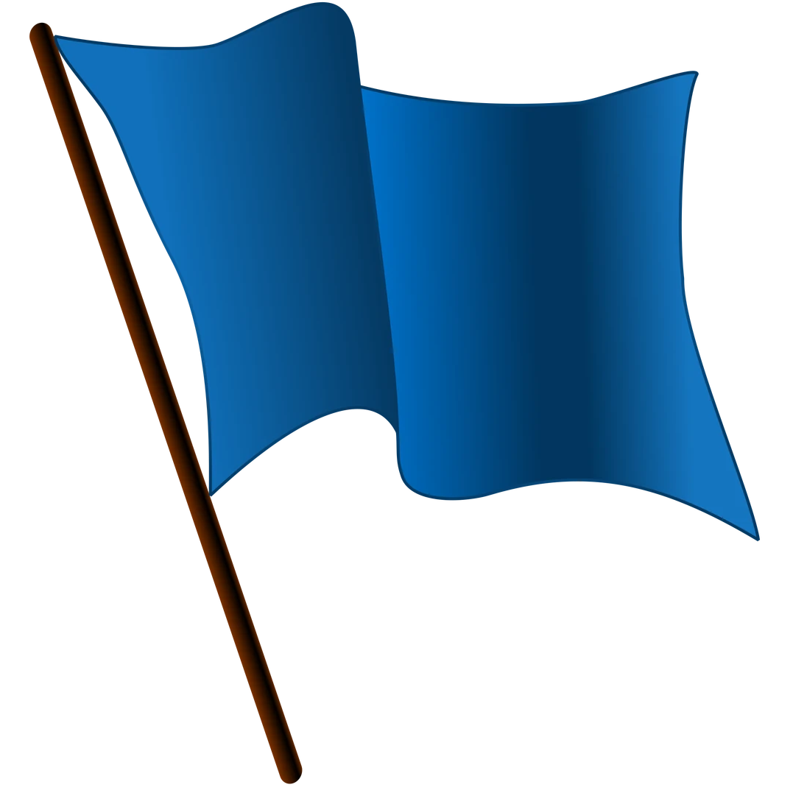
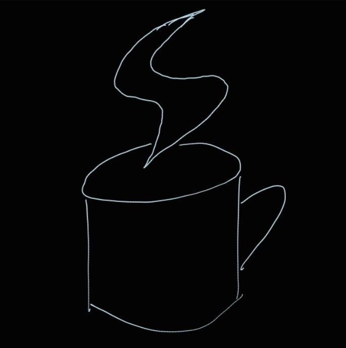
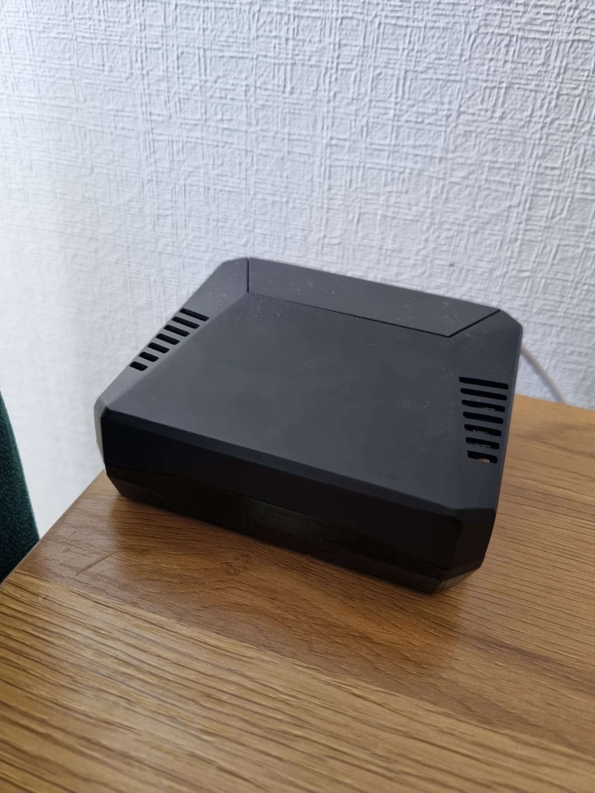
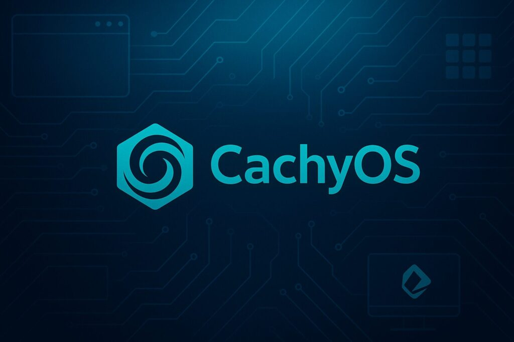
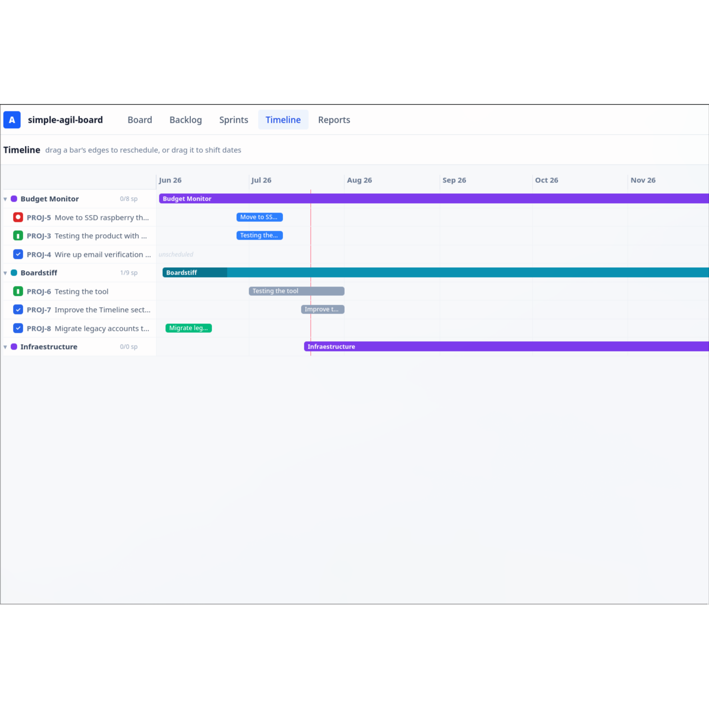

EN
ES
cv
posts
about
Posts
Writing, projects, and things worth sharing.
All posts

2026-08
Public registry of my books
This is a public registry of readed books. Generated with the Kobo-ld help.
Books
Blog
BearBlog
2026-08
Kobo-ld
Kobo e-reader integrated TUI to register, backup and make statistics from yout books. Generate resume about yours readings.
Kobo e-reader
TUI application
Side Proyect

2026-02
EnCoCoa
English Conversational Coach. A local lightweight tool for practicing English with a partner.
Python
ML
Side Proyect

2025-06
Raspberry Server Scripts
Scripts for manage the raspi 5, and work as a server in home.
Scripting
Server in House

2026-03
CachyPool
CachyOS opinionated version edit for development and NVIDIA card compatibility with Hyperlnd.
OS
Arch

2026-06
Boardstiff
Simple standalone board for Scrum/Agile for personal use. I dont want to pay more suscriptions, this is a solution for that.
Agile Board
Side Proyect
2025-12
Causal Effects of Tobacco Control Policies
A comprehensive causal inference project analyzing the effect of tobacco control policies on smoking prevalence and health outcomes using panel data from 150+ countries over 20+ years.
Causal Inference
Python
2025-11
Froth bubbles detection over an infrastructure
Build an end-to-end platform that receives images, runs YOLO-seg inference, stores results, monitors performance, and is fully deployed with Infrastructure as Code and CI/CD.
FastAPI
Docker
PostgreSQL
Prometheus
2026-03
Code RAG prototipe with UTFSM documents
Conversational application to talk about the courses of UTFSM 2014 to 2022 recopilation.
Python
RAG
2026-01
Nanochat from karpathy: Ingestion
Im trying to ingest one of the most valuable repos to train LLM from scratch.
LLM
2021-03
System Dynamics application over Economy
Hamiltonian ports and the alternative application in economy.
Python
Hamiltonian Ports
Control Systems Simulation
2026-03
Froth Simulation Bubbles
Open source version proyect of generation of bubbles to generate syntetic data.
Generated data
Computer Vision
2026-03
Personal Blog
Personal Blog, writing about IA, random_topics(), Books and SC or AoE II. A privacy-first, no-nonsense, super-fast blogging platform.
BearBlog
Blog